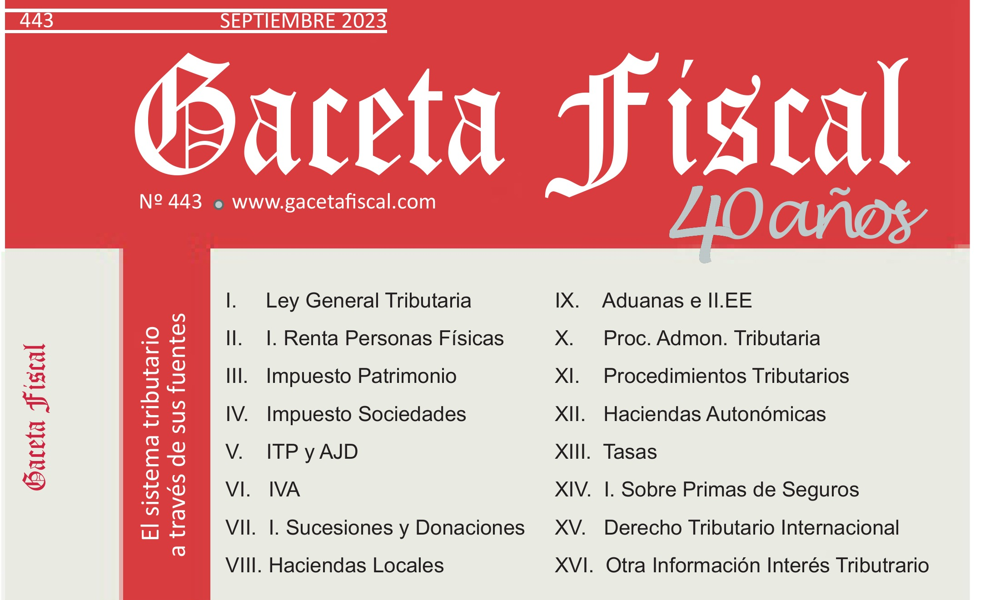
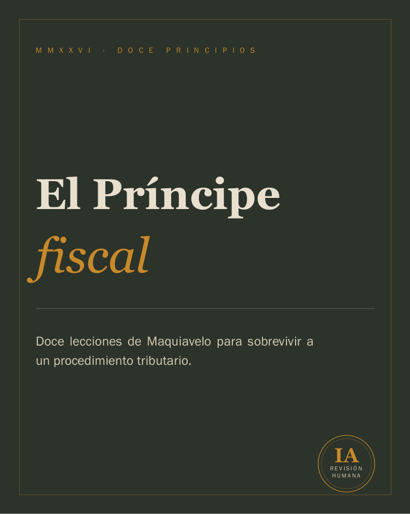

Luis de Francisco
Morales
19 años convirtiendo normativa compleja en decisiones claras para mis clientes, en IRPF, Patrimonio, Sociedades y fiscalidad patrimonial. Una experiencia forjada tanto en el despacho como al frente de la dirección editorial de una revista jurídico-tributaria de referencia durante una década.

Los hechos probados
De ejercicio ininterrumpido en fiscalidad y contabilidad, desde 2006 hasta hoy, para sociedades, profesionales y particulares.
Dirigiendo y coordinando Gaceta Fiscal, con análisis diario de normativa, doctrina administrativa y jurisprudencia.
IRPF · Patrimonio · Sociedades · ITPAJD · ISD — con expedientes en gestión, inspección, recaudación, vía económico-administrativa y judicial.
Trayectoria profesional
Legal Mavens
Liquidación y revisión de obligaciones tributarias de sociedades, personas físicas y patrimonios familiares. Asesoramiento fiscal recurrente, informes técnicos y planificación patrimonial.
Grupo de Empresas Díaz Arias
Asesoramiento fiscal y contable a todo tipo de clientes. Dirección de expedientes tributarios en sede administrativa (gestión, inspección, recaudación y revisión), económico-administrativa y judicial. Confección y liquidación de IS, IRPF, ITPAJD, ISD y tributos locales.
- Equipo jurídico de GESAF y Foro de Abogados Tributaristas (FAT)
- Resolución de consultas jurídicas y atención directa a clientes
Gaceta Fiscal
Elaboración, coordinación y dirección de la revista jurídico-tributaria. Contacto diario con las modificaciones legislativas autonómicas, estatales y europeas, y con los últimos pronunciamientos de la Administración y la jurisprudencia.
Una década al frente de Gaceta Fiscal

Revista jurídico-tributaria de referencia
Durante más de una década he tenido el privilegio de dirigir y coordinar Gaceta Fiscal, una revista jurídico-tributaria de referencia, con seguimiento diario de las modificaciones legislativas autonómicas, estatales y europeas, y de los pronunciamientos más recientes de la Administración y los tribunales. Ha sido una etapa de la que me siento profundamente agradecido: me ha permitido formarme junto a grandes profesionales del sector y estar en primera línea de cada cambio normativo antes de que llegara a los despachos.
Esa disciplina de actualización constante —norma, doctrina, jurisprudencia— no se ha quedado en la revista: es el mismo método que aplico en cada expediente. Primero entiendo el criterio de la Administración; después, construyo con rigor la posición del cliente.
Publicaciones y divulgación

El Príncipe fiscal
Doce principios de El Príncipe leídos como lo que realmente son en un expediente tributario: advertencias sobre el tiempo, la prueba y la forma. Cada uno enfrenta el texto de Maquiavelo con su traducción al derecho tributario vigente —plusvalía municipal, calificación y simulación, conflicto en la aplicación de la norma, empresa familiar, valor de referencia, motivación de la culpabilidad, plazos del procedimiento inspector, consultas vinculantes o recargos por extemporaneidad— y se cierra con la lectura desde el otro lado de la mesa: qué mira el actuario.
«Ninguna de estas doce ideas enseña a engañar a Hacienda. Todas explican cómo se pierde un expediente antes de que empiece.»
Contenido elaborado con asistencia de inteligencia artificial y revisado por un profesional en ejercicio.
Otras colaboraciones
Últimas reflexiones
Casi a diario publico en LinkedIn análisis breve de doctrina, jurisprudencia y actualidad tributaria: la misma disciplina de actualización que aplico en cada expediente, y la mejor prueba de que sigo en primera línea de la materia.
¿Puede Hacienda ignorar un documento por estar redactado en inglés?
El artículo 106.1 LGT remite a la LEC: todo documento en idioma no oficial debe traducirse para poder valorarse como prueba. El TEAC lo confirma en doctrina reiterada — pero traducir no exige traducción jurada, y el criterio cambia según quién aporte el documento.
De Spiderman a Bulgari: los gastos más peculiares que alguien ha intentado deducir
Un repaso, con casos reales de la DGT y los tribunales, a gastos deducidos que no lo eran: una mamoplastia, un disfraz de Spiderman, la cuota del Real Madrid, un colgante de Tous. El fondo nunca es lo extravagante del gasto, sino su correlación con la actividad y la prueba de esa correlación.
Reducción de capital con adjudicación de inmuebles
Cuando una sociedad reparte un inmueble entre sus socios en una reducción de capital o disolución, hay un impuesto que conviene anticipar antes de firmar la operación, no después.
La simulación no se aplica a la carta según el ejercicio
STS 990/2026: la Inspección apreció simulación entre 2013 y 2016, pero solo trasladó sus efectos al Impuesto sobre Sociedades cuando el IRPF del socio ya no podía regularizarse. El Supremo rechaza esa asimetría — la misma calificación no puede aplicarse de forma selectiva según lo que recaude cada ejercicio.
Formación académica y continua
Universidad Autónoma de Madrid
- Doble LicenciaturaDerecho y ADE
Formación complementaria
- Gestoría fiscal, laboral y contableCEF · 150h
- Experto en financiación de empresas170h
- Registros contables120h
- Contratación laboral64h
- IA y Big Data50h
A la firma
Quedo a su disposición para ampliar cualquier información sobre mi trayectoria profesional y valorar cómo mi experiencia puede encajar con las necesidades de su equipo.